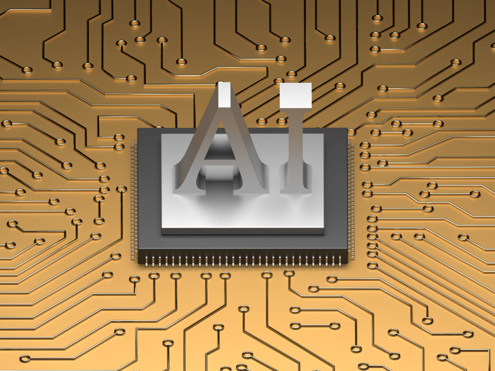

Workshops
Professional Workshops in Artificial Intelligence and Robotics
AI and robotics
The capabilities organisations need now.
Artificial intelligence now reaches well beyond conversational tools into automated workflows, autonomous agents and embodied robotics. These workshops examine the platforms and architectures leading that shift worldwide, including n8n, the Model Context Protocol and vision-language-action models.
Each programme pairs hands-on deployment with rigorous technical governance. Trainees leave able to implement these technologies and to demonstrate that they operate safely, reliably and securely.
Select a series
Orchestrating Intelligent Workflows with n8n
Build automated workflows in n8n that connect business systems and apply language models to routine processes, from data capture to reporting.

Design and Orchestration of Autonomous AI Agents
Design AI agents that plan, call tools and coordinate with one another, and govern them with the permissions and oversight production demands.
Enterprise Knowledge Retrieval with Generative AI
Build AI assistants that answer from your organisation's own policies, courseware and records, with every response traced to its source.
Adversarial Threats and Defence in AI Systems
Examine how AI systems are compromised through jailbreaking, prompt injection and data poisoning, and apply the testing and layered controls that defend them.
Physical AI and Intelligent Robotics
Learn the technologies behind collaborative robots, humanoids and vision-language-action models, and plan a deployment from pilot to production.
Generative AI for Professional Practice
Apply generative AI to professional work with rigour, from structured prompting and integrated copilots to custom assistants and verified output.
In-house delivery
Tailored for your organisation.
Delivered at your offices or conducted virtually, each run is customised around your active course portfolio and internal operating procedures.